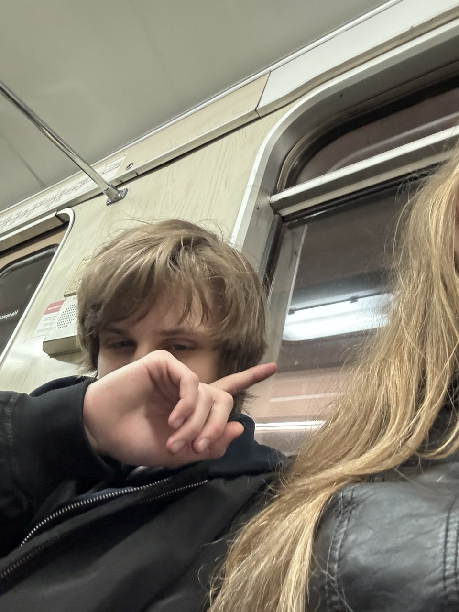
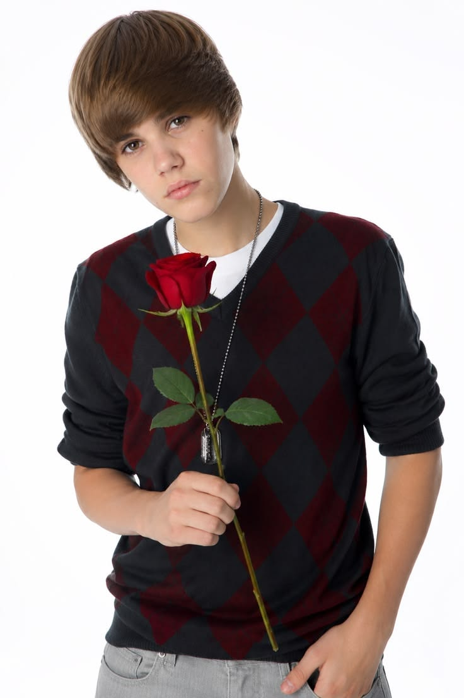

SORRY одно сообщение0:003:25
Нажми ▶ — дальше я всё сказал внутри
Мишель.
Знаю, ты во мне расстроилась.
И у тебя есть на это все основания.
Я накосячил.
И не собираюсь это как-то красиво объяснять.
Я был неправ.
Мне правда жаль.
Жаль не потому, что ты расстроилась.
А потому, что расстроил тебя я.
Это разные вещи.
Ты мне дороже любой моей правоты.
И выигрывать у тебя я больше не хочу.
Я это понял ровно в ту секунду, когда ты замолчала.
Да, я включил тебе Бибера.
Дожил, знаю.
Просто он это сказал раньше меня и громче.
Но скажу и я, своими словами:
Прости меня.
Пожалуйста.
Я подожду столько, сколько нужно.

Спасибо. Правда.
Обещаю: в следующий раз сначала выслушаю, а потом уже открою рот. И сегодня вечер полностью твой — фильм, еда, место, всё выбираешь ты.
люблю тебя